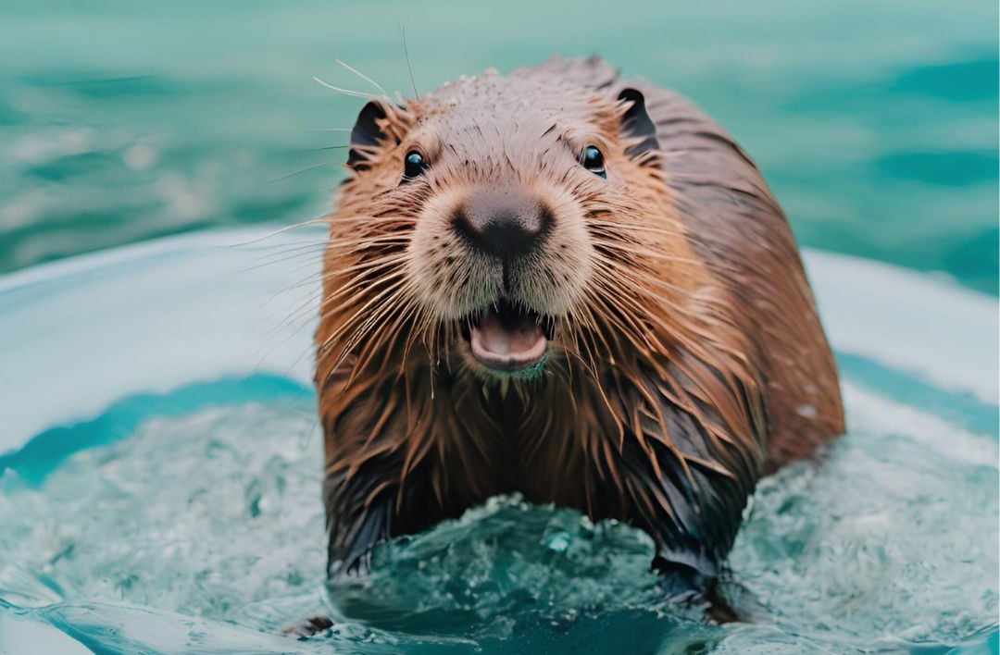

Quienes Somos
En base al cuidado del agua de los castores, decidimos crear una asociación del cuidado del agua, al ser ellos cautivadoras criaturas en materia de conservación.

Los castores son ingenieros naturales del ecosistema, transformando su entorno de manera significativa. Construyen represas y embalses que ralentizan el flujo del agua, previniendo inundaciones y almacenando agua durante sequías. Estas estructuras no solo regulan el agua, sino que también crean hábitats acuáticos diversificados, esenciales para el desove del salmón y otras especies. Además, actúan como cortafuegos naturales al limitar la propagación de incendios forestales. Su influencia en el paisaje es profunda, modificando bosques y creando humedales que enriquecen la biodiversidad local.
¡Así de felices son los castores si nos comprometemos a cuidar del agua!
Compromiso con el agua
En nuestra empresa, entendemos que el agua es un recurso vital, esencial para la vida y el bienestar de todas las comunidades. Nuestro compromiso con el cuidado del agua no es solo una responsabilidad, sino un apasionante deber que asumimos con gran orgullo y dedicación. Aquí te contamos por qué deberías pensar en nosotros cuando se trata de sostenibilidad y cuidado del agua.
Innovación en Tecnología de Conservación
WaterGuards se destaca por desarrollar y utilizar tecnologías innovadoras para la conservación del agua, mejorando la eficiencia en su uso y reduciendo el desperdicio.
Productos y Servicios Sostenibles
Tenemos productos y servicios diseñados para promover el uso sostenible del agua, como sistemas de riego inteligente, dispositivos de medición de consumo y soluciones de tratamiento de aguas residuales.
Educación y Sensibilización
Nos comprometemos activamente a educar a sus clientes y a la comunidad en general sobre la importancia de conservar el agua, promoviendo prácticas responsables y eficientes.
Tomá accion
El agua es un recurso vital y limitado que todos compartimos.
Cada gota cuenta, y es responsabilidad de cada uno de nosotros protegerla y conservarla para las generaciones futuras.
¿Qué puedes hacer tú?
- Cierra el grifo mientras no lo uses: No dejes correr el agua innecesariamente al lavarte las manos, cepillarte los dientes o fregar platos.
- Repara fugas: Asegúrate de que no haya fugas en grifos, cañerías o tanques. Incluso una pequeña fuga puede desperdiciar muchos litros de agua.
- Optimiza el uso del agua en el jardín: Riega las plantas temprano en la mañana o al atardecer para reducir la evaporación, y utiliza sistemas de riego eficientes.
- Usa electrodomésticos eficientes: Prefiere lavadoras y lavavajillas de bajo consumo de agua y energía.
- Educación y concienciación: Comparte esta información con amigos y familiares para multiplicar el impacto de nuestras acciones.
Cada uno de nosotros, como habitantes de este mundo compartido, llevamos la responsabilidad y el poder de marcar la diferencia. Es hora de unir fuerzas, de alzar nuestras voces en defensa de lo que nos sostiene: el agua.